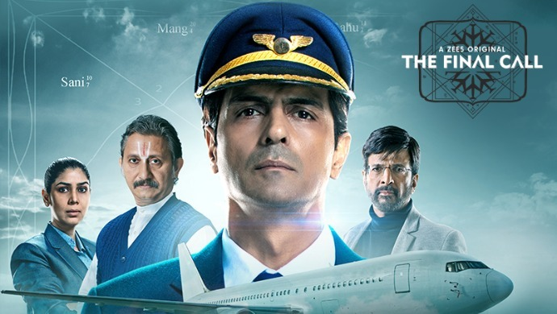

The Final Call
 The series has total 8 Episodes. All are dependent on each other.The story runs around Arjun Rampal as Captain Sachedev who was previously pilot for Fighter aeroplanes but later due to consequences his behaviour he resigned from that job and started working as pilot in Indian Airlines. He lost his Family because of 17yrd young boy who was drunk and driving. Sakshi Tanvar as ETC Kiran Mirza is mother of Co-pilot Abhimanyu who is Killed unknowingly by Captain Sachdev. Kiran is Brilliant and smart Lady Officer. Captain Sachdev Mixes Poison in his own Coffee and mistakenly thaat coffee is taken by his Co-pilot Abhi And there he dies. Same Coffee is drunk by third pilot who was having rest. And the story goes on. Mr. Krshnamurthy is an Astrologer and he already knew that he will die through this Journey. Mr Sighania is famous rich Buissnessman who thinks that whatever he has now or whatever he is is because of that stone that he got in his childhood when he mistakenly felled into an well. Sarah is German writer who visited india for her writing purpose and she is also on the plane as she was hurrying to go to Sydney because she was being cheated by her own bestie and bf. The boy seating near her had dream of football player but could'nt make it because his leg got fractured during selection procedure and now he wants to be with her Grandma through rest of her life who is living in Old age and lost her memory.
What I liked most in the series is that ETC Kiran Mirza who is mother of the co-pilot died on the plane. She gets to know this on first call with Captain but still she handles the case and kept on talking with Captain and doing her Work. She lost her one and only one son and her courage to handle the case without having a single drop of tears is Salutable. Mr. Krishmurthy tells singhania by looking at his Kundali said he is also going to die in next 4 hrs then for confirmation he also checked Dhruv's Kundali there also he saw same. Sarah asks Krishnamurthy to check whether her book will publish or not and there she gets to know about its not going to but she gets to know one more thing that she will meet one person today and that will change her life.
At the end of series I understood that it's about forgiveness as not keep burdon on ourselves and living our life the way we desire to and not others want it for them. Not letting your personal things keep impact on professional carrier. Its about Living life nothing else.
What I didnt understood is that as the plane crash lands How Mr.Singhania is Still alive although it was written in his Kundali that he will die after four hours. Later he takes the place of Krishnamurthy and walks on his Path.
THE FINAL CALL is a study of desire, destiny, humanity and spirituality through the vulnerability of a disturbed pilot. Committed to its spiritual undercurrents and the requirements of thrills ends on a spiritual high and transcends the digital web series/movie genre to a new high.